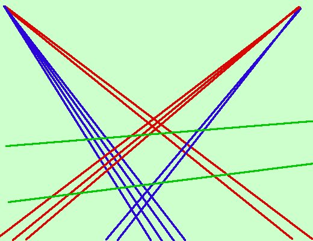

Calcoli mentali particolari
- Quando devo moltiplicare due numeri che differiscono di poco (per un numero pari) posso usare la proprieta' della somma di due numeri per la loro differenza (da usare specialmente se i due numeri hanno come media un numero che termina per zero)
24 x 26 = (25 - 1) x (25 + 1) = 625 - 1 = 624
37 x 43 = (40 - 3) x (40 + 3) = 1600 - 9 = 1591
- Quando devo moltiplicare due numeri entrambe poco superiori a 100 posso utilizzare la seguente regola, che deriva dal prodotto fra polinomi
(100 + a) x (100 + b) = 10000 + 100a + 100b + ab =
10000 + 100(a + b) + ab
112 x 105 = 10000 + 1200 + 500 + 60 = 11760
- Quando i numeri da moltiplicare hanno due cifre posso anche fare mentalmente l'operazione seguendo lo schema che uso per farla scritta. esempio
45 x 62 =
comincio dalle cifre dell'unita'
5 x 2 = 10
la cifra delle unita' e 0 e riporto 1 sulle decine
Poi moltiplico le decine per le unita' e le sommo, aggiungo anche la cifra riportata
4 x 2 + 5 x 6 + 1 = 8 + 30 + 1 = 39
La cifra delle decine e' 9 e riporto 3 sulle centinaia
Poi moltiplico le decine fra di loro ed aggiungo la cifra riportata
4 x 6 + 3 = 27
quindi il numero e'
= 2790
- Quando i numeri da moltiplicare hanno cifre abbastanza piccole posso usare
il seguente metodo grafico
24 x 32 =

24 x 32 = 768
In pratica incrocio le unita' e le decine; conto gli incroci delle unita' con
unita' (sotto le linee verdi) e sono 8, poi conto gli incontri di unita' e
decine (fra le due linee verdi) e sono 12 + 4 = 16: la cifre delle decine e' 6 e
riporto 1 sulle centinaia;
conto infine gli incontri delle decine fra loro (sopra le linee verdi) e sono 6,
riportavo 1, quindi ho 7; il risultato e' 768;
conviene farlo con cifre
abbastanza basse per non avere troppe linee
Se vuoi puoi ampliarlo anche con numeri di 3 o 4 cifre
|